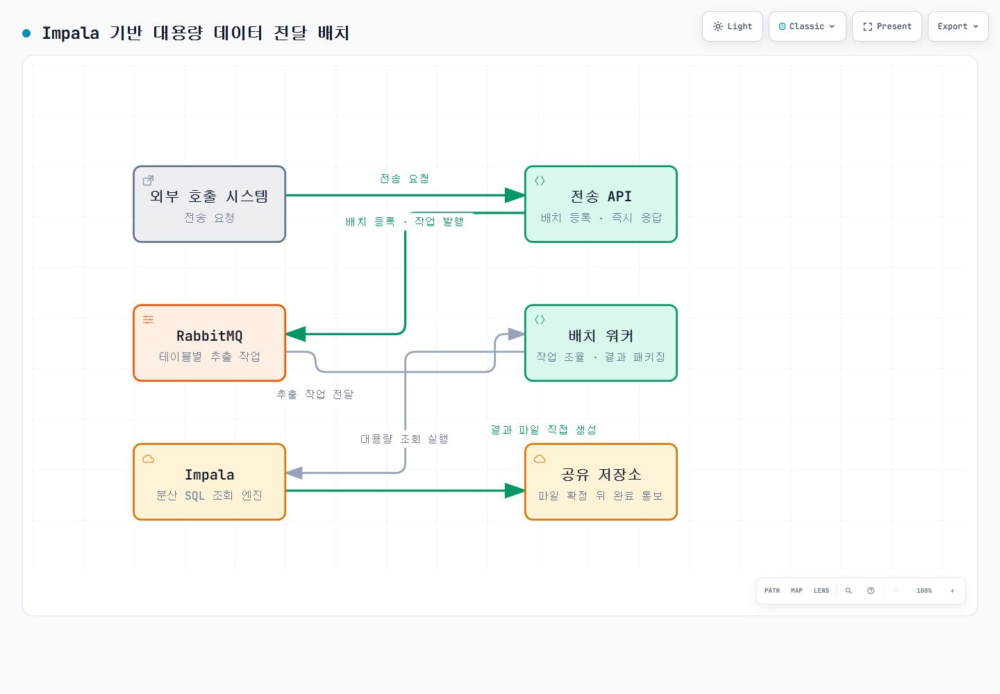

PROJECT 06 / 성능·정확성
Impala 대용량 데이터 추출의 병목 분석·개선 검증
대용량 데이터 추출에서 전체 배치 시간만 보면 원인을 잘못 판단하기 쉽습니다. Impala가 실제로 SQL을 실행한 시간, 외부 환경에서 재시도하며 기다린 시간, 결과를 압축한 시간을 나눠 측정하고 개선 후보를 검증했습니다.
- 기간
- 2026.07 ~ 현재
- 담당 역할
- 인수 후 성능 분석·개선 검증
- Java
- Spring Boot
- RabbitMQ
- Apache Impala
- PostgreSQL
전체 시간만으로는 개선 효과를 판단하기 어려움
외부 기관에 전달할 기업의 세무·회계 데이터를 한 번에 추출하면 데이터 범위와 조회 연도에 따라 작업이 오래 걸립니다. 호출 시스템이 체감하는 전체 시간에는 SQL 실행뿐 아니라 외부 조회 환경의 대기와 재시도도 섞입니다.
어느 단계가 시간을 쓰는지, 개선 뒤에도 전달 데이터가 같은지를 확인해야 했습니다. 이 프로젝트에서는 인수 후 구조와 운영 경로를 분석하고 개선 후보를 검증했습니다.
병목을 나눈 방법
- 요청 접수, 메시지 대기, Impala 조회, 파일 압축, 완료 통보를 각각 추적했습니다. SQL 실행 시간과 외부 메모리 경합으로 인한 재시도·대기를 분리했습니다.
- 엔진이 조회·조인·파일 생성 단계별로 남긴 실행 기록인 쿼리 프로파일을 분석했습니다. 결과 파일 쓰기보다 원본 데이터 조회·조인이 더 큰 비중을 차지함을 확인했습니다.
- 조회 범위와 중복 연산을 줄이는 일을 우선 개선 방향으로 잡았습니다.
데이터 이동 자체를 줄이는 구조 확인
Impala가 조회 결과를 공유 저장소에 직접 만들고 워커는 작업 조율과 결과 패키징을 맡습니다. 큰 결과 파일을 워커가 내려받아 다시 쓰지 않아 애플리케이션 메모리와 추가 I/O 부담을 줄이는 구조입니다.
테이블별 작업은 메시지 대기열에서 하나씩 가져와 실행합니다. 최종 압축 파일은 임시 이름으로 기록한 뒤 같은 저장소 안에서 이름을 바꿔, 완성 전에 호출 시스템이 가져가지 않도록 합니다.
개선 후보와 검증
개발 환경에서 일부 조회 구문의 DISTINCT를 제거하는 변경을 적용하고 테이블별 결과 행 수를 기존 결과와 대조했습니다. 행 수 일치는 확인했지만 전체 값이 동일하다는 검증과 운영 적용을 완료한 것으로 표현하지 않습니다.
순수 Impala 조회 시간은 소폭 변했지만 측정 오차 범위로 볼 수 있는 수준이었습니다. 특정 배치의 전체 시간이 크게 줄어든 경우는 외부 환경의 메모리 경합과 재시도 대기가 사라진 영향이 컸습니다.
코드 변경의 효과와 운영 환경 변동을 같은 성과로 묶지 않았습니다. 다음 개선은 넓게 읽는 구간을 줄이고 요청 조건에 맞춰 조회 범위를 좁히는 방향으로 잡았습니다.
검증 기준
- 성능 변경 전후 테이블별 결과 행 수가 같은지 확인했습니다.
- 전체 배치 시간과 Impala 순수 실행 시간을 분리해 기록했습니다.
- 결과 파일이 공유 저장소에 확정된 뒤 완료 상태와 통보가 이어지는지 확인했습니다.
요청 수락과 결과 완료를 분리한 배치 구조
분산 SQL 조회 엔진인 Impala가 결과를 공유 저장소에 직접 만듭니다. 워커는 작업 조율과 패키징을 맡고, 파일 확정 뒤 완료를 통보합니다.
